Explore Karen Kingsbury’s Standalone novels—each a heartwarming story of faith, love, and hope.
Someone Like You by Karen Kingsbury is a faith-based contemporary romance (also a 2024 film) about Andi Allen, who discovers she was adopted as an embryo, revealing she has a secret twin sister. After her life is upended, she sets out to find her biological roots, leading to a journey of heartbreak, family secrets, and unexpected love.
Before You Take a Stand ... You Got to Take a Chance. Holden Harris is an eighteen-year-old locked in a prison of autism. Despite his quiet ways and quirky behaviors, Holden is very happy and socially normal---on the inside, in a private world all his own. In reality, he is bullied at school by kids who only see that he is very different. Ella Reynolds is part of the 'in' crowd. A cheerleader and star of the high school drama production, her life seems perfect. When she catches Holden listening to her rehearse for the school play, she is drawn to him ... the way he is drawn to the music.
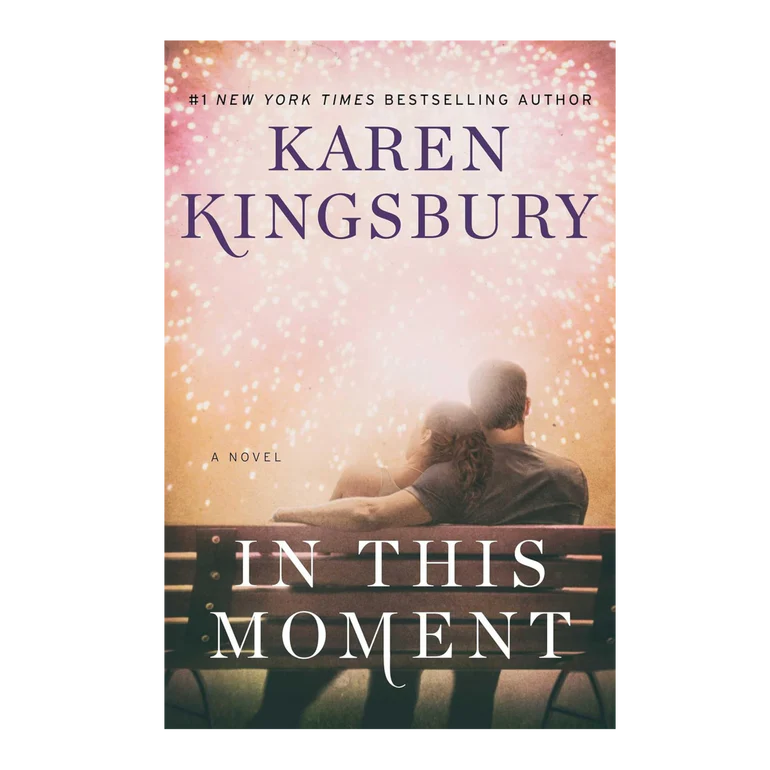
Hamilton High Principal Wendell Quinn is tired of the violence, drug abuse, teen pregnancies, and low expectations at his Indianapolis school. A single father of four, Quinn is a Christian and a family man. He wants to see change in his community, so he starts a voluntary after-school Bible Study and prayer program. He knows he is risking his job by leading the program, but the high turnout at every meeting encourages him.
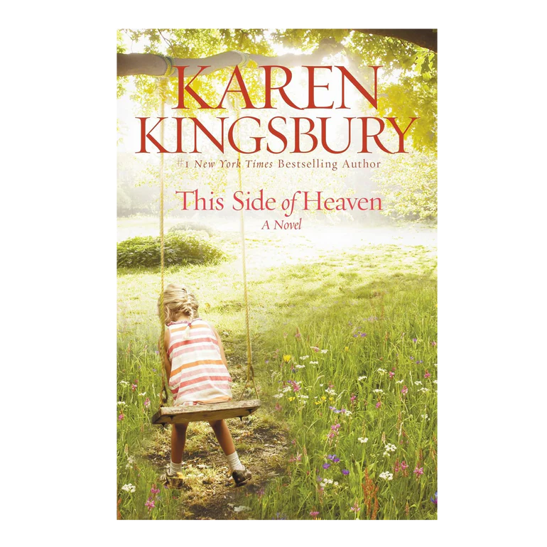
This Side of Heaven by Karen Kingsbury is a Christian fiction novel about Annie Warren, whose son Josh is disabled after a drunk driving accident and is awaiting a long-overdue insurance settlement. As Annie tries to help him, she uncovers a secret: Josh believes he has a 7-year-old daughter with a woman who claims to be the mother, a situation that threatens the settlement but reveals a deeper family treasure. The story explores themes of family, faith, and finding hope in despair, focusing on the unexpected gift Josh's situation brings to his mother.
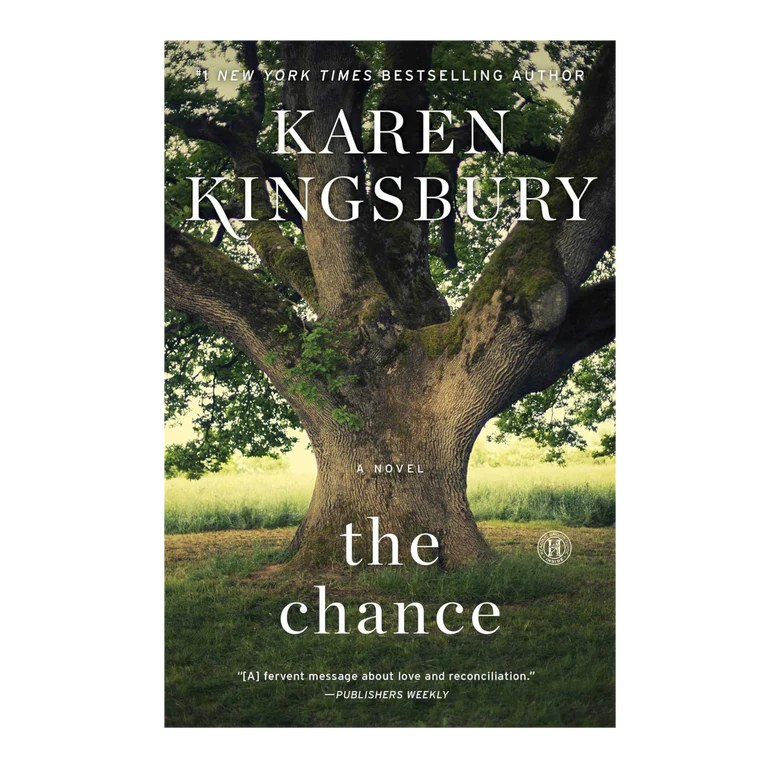
Years ago, the day before Ellie moved from Georgia to California, she and her best friend Nolan sat beneath the Spanish moss of an ancient oak tree and wrote letters to each other, sealing them in a rusty old metal box. The plan was to return eleven years later and read them in 2013, the year Nolan’s time traveling books say all the mysteries of the world will be understood.
Maggie Stovall is trapped inside a person she’s spent years carefully crafting. Now the truth about who she is—and what she’s done—is bursting to the surface and sending Maggie into a spiral of despair. Will she walk away from everything, or can Maggie allow God to take her to a place of ultimate honesty—before it’s too late?
Like Dandelion Dust by Karen Kingsbury is an emotional drama about Jack and Molly Campbell, who face losing their adopted four-year-old son, Joey, when his biological father is released from prison and demands him back. The story explores the legal battle and the desperate lengths the Campbells consider to keep their family together.
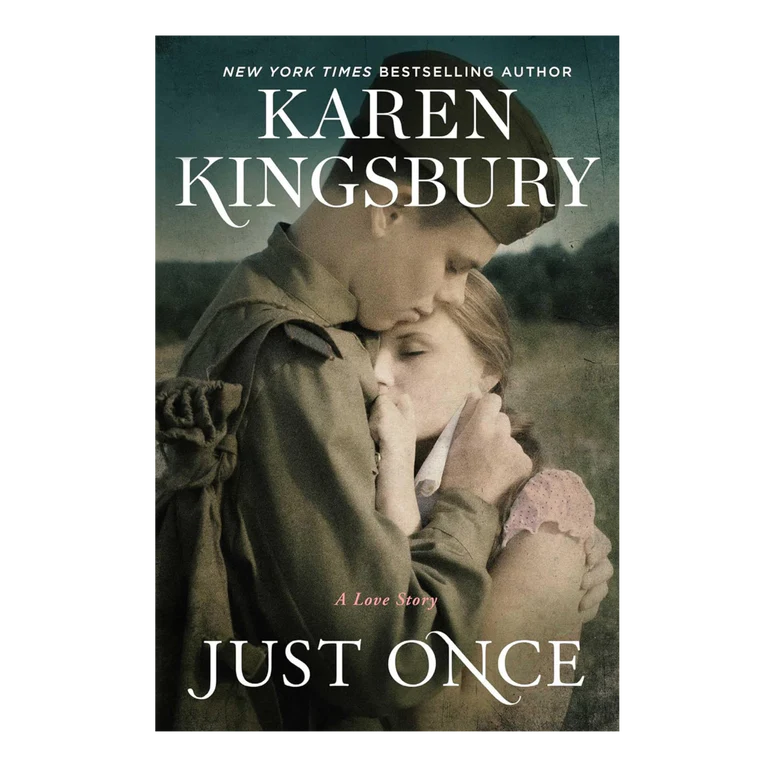
In 1941, beautiful Irvel Holland is too focused on her secret to take much notice of the war raging overseas. She’s dating Sam but in love with his younger brother, Hank—her longtime best friend—and Irvel has no idea how to break the news. Then the unthinkable happens—Pearl Harbor is attacked. With their lives turned upside down overnight, Sam is drafted and convinces Hank to remain in Indiana, where he and Irvel take up the battle on the home front.
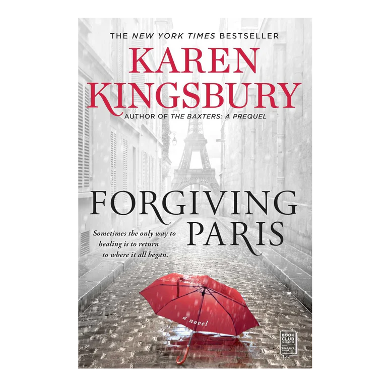
Forgiving Paris is a novel by Karen Kingsbury about Ashley Baxter Blake, who returns to Paris for her anniversary, confronting a past mistake from two decades prior involving a reckless affair, an unexpected pregnancy, and a woman named Alice. The story follows Ashley as she grapples with guilt and secrets, and finds an unexpected connection with Alice, leading to a journey of healing, forgiveness, and hope. It's part of the Baxter Family series and explores themes of family, heartbreak, and redemption.
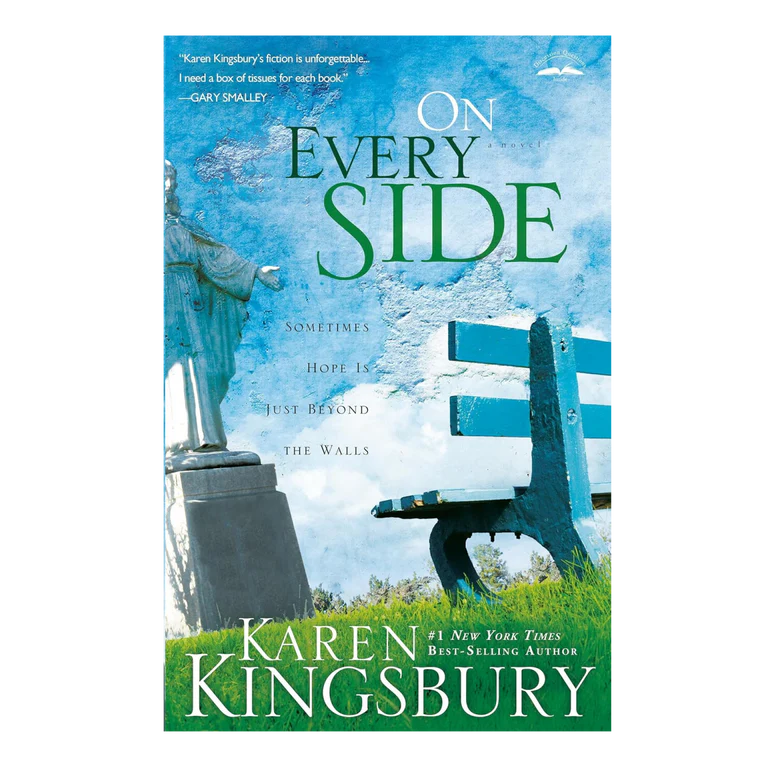
After suffering the loss of his mother and separation from his sister and the girl he loved, Jordan Riley fills the holes in his soul with anger. But Faith Evans begins to disassemble the walls around Jordan ’s heart, and he realizes there’s something very familiar about her.
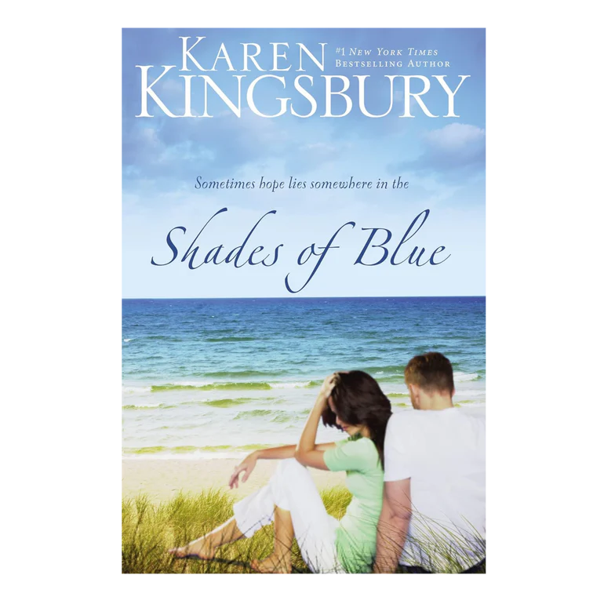
Shades of Blue by Karen Kingsbury is a contemporary Christian fiction novel about a successful New York ad executive, Brad Cutler, whose seemingly perfect life is upended by memories of his high school girlfriend, Emma, and a difficult choice they made years ago. Haunted by the past, he seeks forgiveness and redemption, forcing him, Emma, and his fiancée, Laura, to confront the repercussions of that single decision, exploring themes of love, forgiveness, and healing.
Mary Madison was a child of unspeakable horrors, a young woman society wanted to forget. Now a divine power has set Mary free to bring life-changing hope and love to battered and abused women living in the shadow of the nation’s capital.
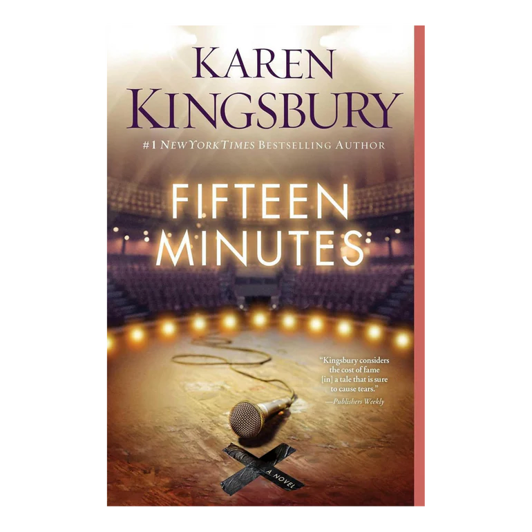
Zack Dylan has a dream. He wants to sing on the biggest stages, for the biggest crowds, and he’ll do whatever it takes to make it come true. But Zack also made a promise to his college sweetheart when he left Kentucky to compete on the popular TV show, Fifteen Minutes: If he made it, nothing would change him or his faith in God.
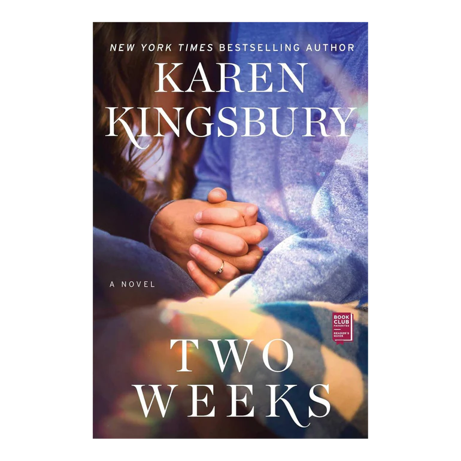
Cole Blake, son of Landon and Ashley Baxter Blake, is months away from going off to college and taking the first steps towards his dream—a career in medicine. But as he starts his final semester of high school he meets Elise, a mysterious new girl who captures his attention—and heart—from day one..
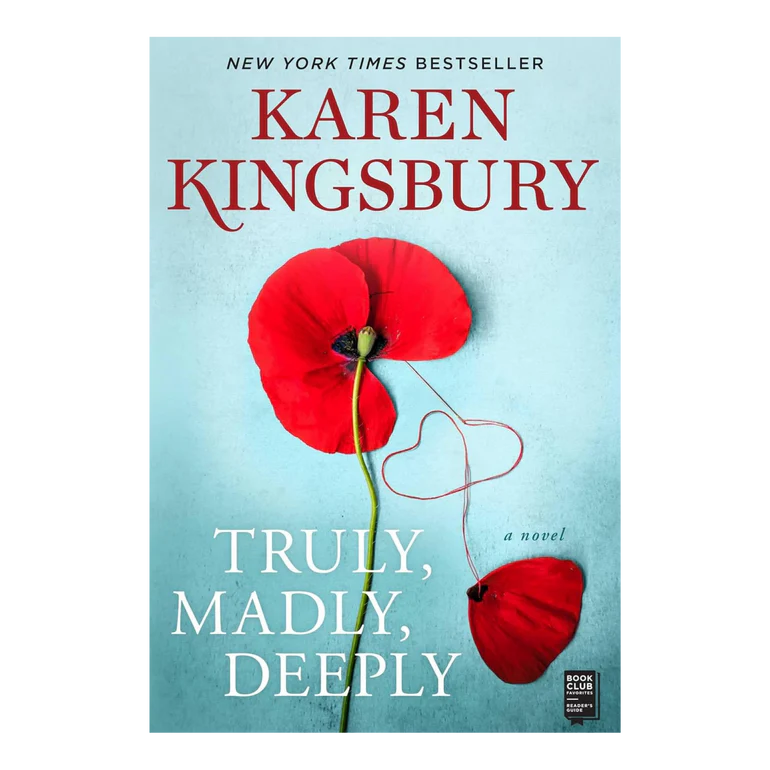
Truly, Madly, Deeply is a 2020 Christian fiction novel by Karen Kingsbury, part of The Baxter Family series, focusing on the romance between 18-year-old Tommy Baxter and Annalee Miller, whose relationship is tested by her serious illness and his decision to become a police officer, prompting family conflict and a search for answers about his past. The book explores themes of faith, family, love, and loss, blending romance with drama and touching on the aftermath of 9/11.
From the day they met, John and Elizabeth were destined to fall in love. Their whirlwind romance started when they were young college students and lasted nearly thirty years—until Elizabeth died of cancer. So when John Baxter is asked to relive his long-ago love story with Elizabeth for his grandson Cole’s heritage project, he’s not sure he can do it. The sadness might simply be too great. But he agrees and allows his heart and soul to go places they haven’t gone in decades. Back to the breathless first moments, but also to the secret heartbreak that brought John and Elizabeth together.
A Distant Shore by Karen Kingsbury is a Christian fiction novel about an FBI agent, Jack Ryder, who reconnects with a woman, Eliza Lawrence, he saved from drowning as a teenager, leading to a high-stakes mission involving her forced marriage to a drug lord, blending romance, danger, and faith as they pretend to fall in love for the mission but risk real feelings. The story follows their reunion during a dangerous operation where their past connection and present danger force them together, exploring themes of love, redemption, and miracles.
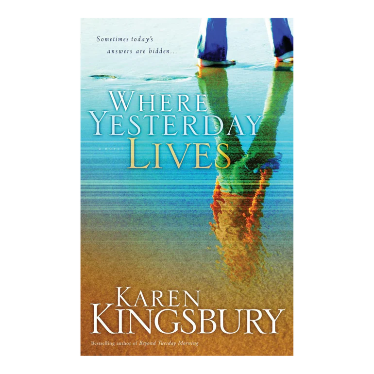
At thirty-one, Ellen Barrett has already won a Pulitzer prize. Sadly, though, her skill as a journalist far surpasses her ability to sort out her troubled past. When she returns to picturesque Petoskey, Michigan, for her beloved father’s funeral, it’s a traumatic emotional and spiritual journey for Ellen—a rediscovery of what is truly important and eternal.
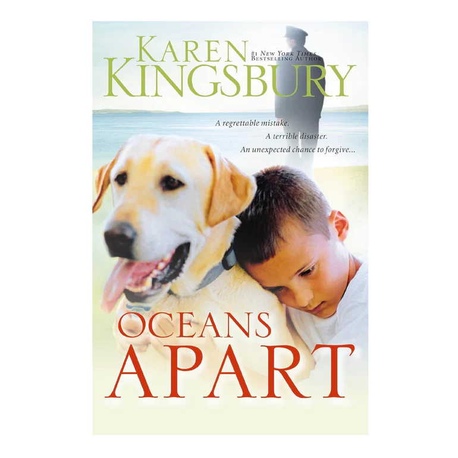
Oceans Apart by Karen Kingsbury is an inspirational story of secret sin, forgiveness, and family, focusing on airline pilot Connor Evans. His seemingly perfect life is shattered when a past affair results in a 7-year-old son, Max, entering his life after the mother dies in a plane crash. The book explores if Connor and his wife, Michele, can reconcile.
From their first meeting, to their stunning engagement and lavish wedding, to their happily-ever-after, Noah and Emily Carter were meant to be together. Theirs is a special kind of love and they want the world to know. More than a million adoring fans have followed their lives on Instagram since the day Noah publicly proposed to Emily. But behind the carefully staged photos and encouraging posts, their life is anything but a fairytale, and Noah’s obsession with social media has ruined everything.